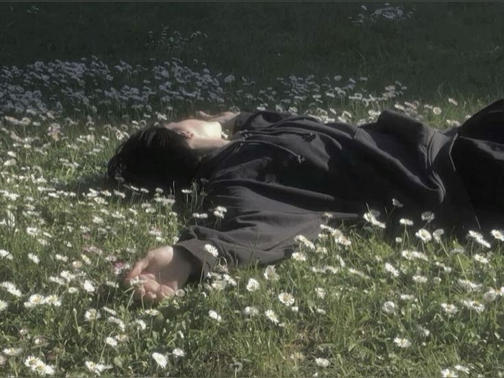
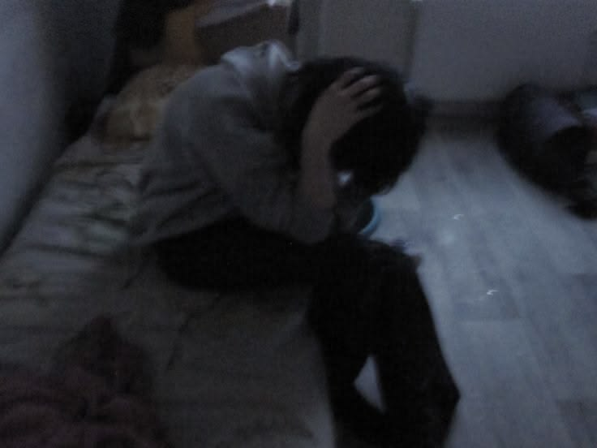

Study
Навчання — семестри
Таблиця предметів із викладачами, оцінками та перемиканням семестрів.
| # | Дисципліна | Викладач | Бал | ECTS |
|---|
Favorites
Улюблені фільми та серіали
Я люблю фільми та серіали не тільки за сюжет, а й за емоції, естетику, стиль і той особливий настрій, який вони залишають після перегляду.
Mood
Я у різних настроях
Три фото, які передають різний стан і настрій.

Легкість, тепло, гарний настрій і відчуття спокою.

Іноді настрій стає більш тихим, задумливим і спокійним.
Стан, у якому хочеться створювати щось красиве й корисне.
Gallery
Фотогалерея
Кілька фотографій, які мені подобаються.
Music
Улюблена музика
Тут можна увімкнути мої улюблені треки, перегортати їх і слухати музику прямо на сайті.
Now playing
Track title
Artist name
Place
Цікаві факти про місце, де я живу
В Амстердамі більше велосипедів, ніж жителів.
У місті понад 1500 мостів.
Тут знаходиться знаменитий музей Rijksmuseum.
Багато будинків стоять на дерев'яних палях.
Канали Амстердама входять до списку Світової спадщини ЮНЕСКО.
Map